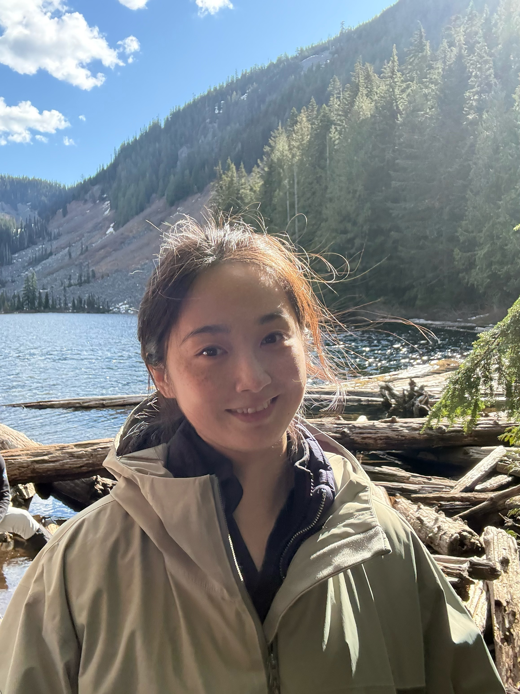
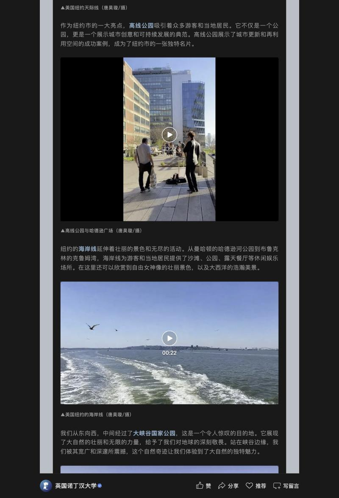
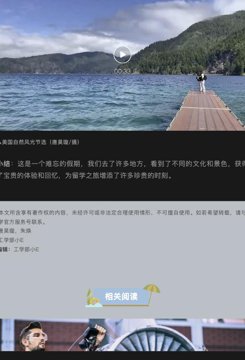
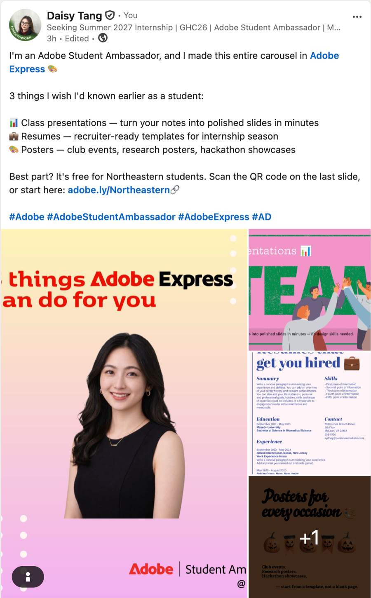
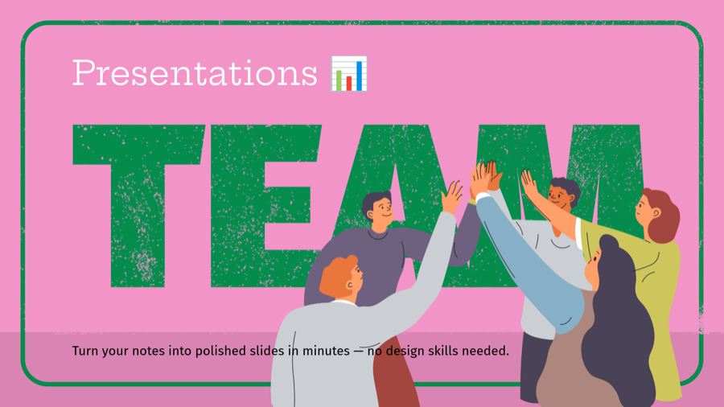
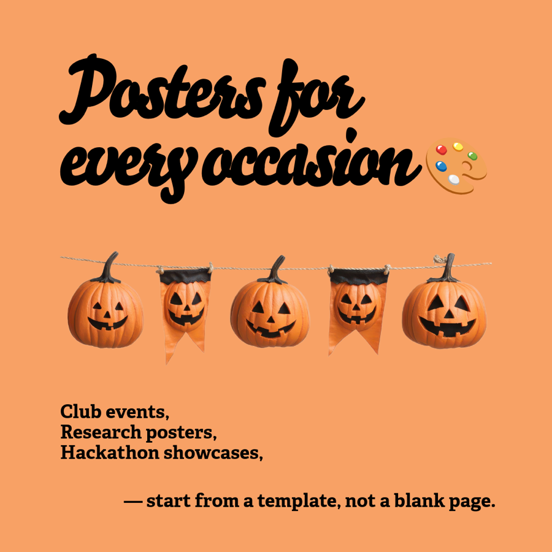

I have held this job before. For twelve months I was a paid International Student Ambassador in an engineering faculty at the University of Nottingham — campus tours, student panels, online office hours, published articles. I am now an Adobe Student Ambassador here in Seattle.

I am an MS Information Systems - Bridge student on the Seattle campus, and I came here the way a lot of COE applicants do: from outside the United States, from outside computing, and in a spring term rather than a fall one. Before that I spent a year as an International Student Ambassador for the Faculty of Engineering at the University of Nottingham — a paid position.
That job was this job. I built and maintained a 206-question bilingual reference document across nine categories over twelve months, supported more than 100 prospective and admitted students through a moderated community and scheduled evening office hours, and logged and summarised enquiries monthly for my supervising manager. I ran the logistics for campus tours, student panels, an online Q&A series and postgraduate socials — scheduling, venue booking, stakeholder coordination, follow-up.
The content half is current, not historical. Since September I have been an Adobe Student Ambassador for Northeastern Seattle, designing and publishing social content for a Husky audience inside someone else's brand guidelines. Both roles taught the same thing: representing an institution well means being useful to your reader first and promotional second.
STUDENTS · CONTENT · EVENTS
Taken from the posting. Where I have done the work directly, I say so; where I would be learning the specific system or platform, I say that too.
University of Nottingham · December 2022 – October 2023 · a paid position in an engineering faculty.
Built and maintained a bilingual academic reference covering 206 questions across 9 categories, kept current for a full year so the answers outlived whoever happened to be on duty.
Supported 100+ prospective and admitted students through a moderated community and scheduled online office hours, Monday to Friday evenings, handling personal academic details with discretion.
Campus tours, student panels, an online Q&A series and postgraduate socials — including the scheduling, room and venue booking, stakeholder coordination and follow-up behind each one.
Logged and summarised student enquiries monthly for the supervising manager, so recurring questions turned into changes in what the Faculty published rather than repeated answers.


I contributed to 22 bilingual articles on the Faculty's official channel as part of the student team. In the travel feature shown here my contribution was the video: five segments, filmed and supplied, each captioned "filmed by Haoxuan Tang" in the original Chinese.
The credits block names me as one of two video contributors. Stills and layout on that piece are credited to the Faculty account, not to me — worth saying plainly, because a portfolio that overstates one line is hard to trust on the rest.
"This course gave me a complete and systematic opportunity to study urban design and widened my perspective. It pushed me to think critically and to work with many parties to shape cities into vibrant, resilient, high-quality spaces."
— quoted as a programme representative in the Faculty's graduation exhibition feature, as Haoxuan Tang, MArch Sustainable Urban Design 2022–23. Translated from the original Chinese.Northeastern already pays for an Adobe Express license that every student can use for free, and most students have never opened it. My first substantive piece as an ambassador was a five-slide LinkedIn carousel that translates that into three situations students actually face: the slide deck due tomorrow, the resume needed for internship season, and the poster for a club event.
I chose the topic, wrote the copy, and designed all five slides in Adobe Express, to Adobe's published brand guidelines, ending on a QR code that routes Huskies to the free license. The post carries sponsored-content disclosure, because that is the rule and because an undisclosed ad is a worse ad.
It is the same instinct this role needs: the resource existed, the awareness did not, and closing that gap is a content problem.



Since January 2026. An ambassador who has not turned up to anything has nothing to describe.
Joined as a mentee in February 2026. When I realised I had not been added to any pod group chat, I emailed all four of my pod mentors and asked to be added. That one message turned a roster assignment into a peer network I still use.
Events run by Seattle Husky Robotics, whose beginner workshop got me into the Makerspace with no background at all; NUPM, whose mentorship mixer at GitHub I attended; and Tech@Crossroads, which exists for students who came into computing from somewhere else entirely.
The Fall 2026 COE Welcome Event, The Evolution of SEIS, the Google Cloud workshop on campus — and the pre-arrival career development series I followed from overseas before I had even landed.
Weekly one-to-one sessions booked through Penji over the summer, working on conversational English. Most students I have met have never opened Penji. The resources here are consistently better than awareness of them.